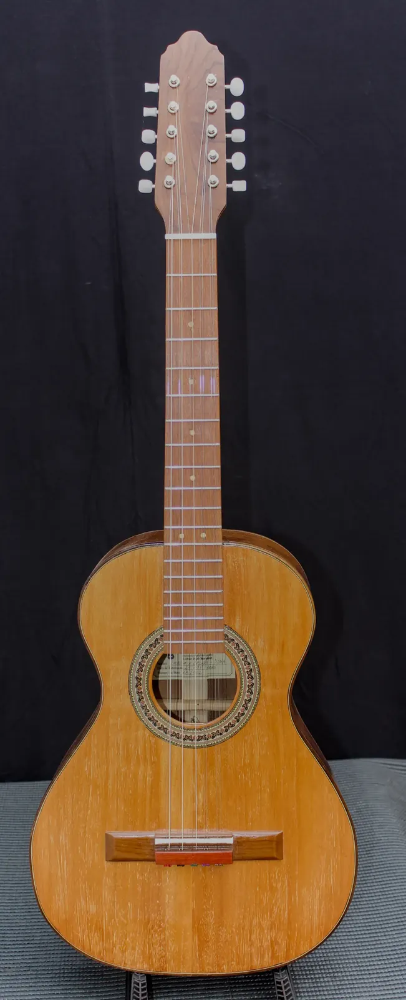

Tainá Viola

Madeiras
- Tampo
- Cedro
- Fundo e laterais
- Imbuia
- Braço
- Imbuia
- Escala
- Pau Ferro
- Cavalete
- Pau Ferro com detalhes em Pau Brasil
Componentes
- Tarraxas
- Rozini
- Filetes / marchetaria
- Marchetaria em madeira
- Acabamento
- Goma Laca Indiana
- Trastes, nut e rastilho
- Nut e Rastilho em osso
- Preço
- R$ 3.500,00
- Identificação
- BL-25-VL-002
Apresentamos um instrumento que é muito mais do que música: é arte em forma de som. Cada detalhe foi cuidadosamente trabalhado para oferecer qualidade superior e uma experiência única ao músico exigente.
Feito artesanalmente em madeira maciça, ele combina sofisticação visual com um timbre encorpado e equilibrado, capaz de emocionar em qualquer apresentação. O tampo em cedro selecionado garante profundidade e calor às notas, enquanto fundo e laterais em imbuia proporcionam uma sonoridade rica e envolvente. O braço, também em imbuia, assegura excelente estabilidade, permitindo conforto e confiança na execução.
Os acabamentos são um espetáculo à parte: filetes e detalhes em madeira marchetada que elevam o instrumento a um nível de elegância raro. Para completar, as tarraxas Rozini luxo oferecem precisão e durabilidade, mantendo a afinação impecável.
Criado pelas mãos experientes do luthier Jacir Paulo Baratieri, este instrumento carrega tradição e excelência, tornando-se não apenas uma ferramenta musical, mas uma verdadeira obra-prima.